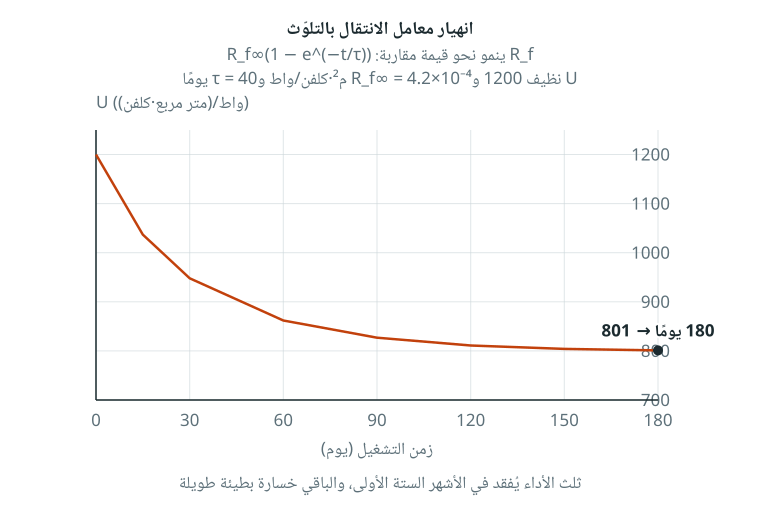

التلوّث الحراري في المبادلات
التلوّث طبقة راسبة على سطح التبادل تضيف مقاومة حرارية تنمو مع الزمن فتُنزل المعامل الكلي: 1/U_f = 1/U_clean + R_f. وقد يستهلك ثلث الأداء في الأشهر الأولى من التشغيل.
التلوّث ترسّب مواد على سطح التبادل: بلورات أملاح، أو جزيئات عالقة، أو أحياء دقيقة، أو نواتج تآكل، أو طبقة بوليمرية من تفاعل كيميائي. كل نوع يضيف مقاومة حرارية R_f إلى السلسلة، ولأنها طبقة مادة إضافية فإنها تنمو من الصفر إلى قيمة مقاربة تنتهي عندها عندما تتوازن قوى الالتصاق وقوى القص من الجريان. الأثر ليس إضافيًّا بسيطًا: مقاومة 4×10⁻⁴ م²·كلفن/واط تعادل غشاء ماء بمعامل 2,500، أي أنها تُضاعف مقاومة الماء وحدها. ولذلك تُضاف في التصميم مساحة احتياطية ومعاملات تلوّث مرجعية، ويُبنى جدول تنظيف قبل أن تصل المقاومة إلى قيمتها المقاربة. والفارق بين المبادل النظيف والمتلوّث يظهر في الحمل لا في درجة الحرارة: الحمل يقلّ بينما المدخلات ثابتة.
كيف تعمل الظاهرة؟
تبدأ الطبقة بنوى ترسّب على الجدار الخشن أو على نقاط ساخنة، ثم تنمو أفقيًّا حتى تغطي السطح. وفي الترسّب البلوري (كربونات وصخور) تزداد السماكة مع فرط التشبّع ودرجة حرارة السطح؛ وفي الجزيئات يتحدد النمو بسرعة الجريان وموضع إعادة الاتصال؛ وفي التلوّث الحيوي تتضاعف الكتلة الحيّة ثم تموت وتتحوّل إلى طبقة عازلة. وكلما زادت السماكة قلّ معامل التوصيل الفعّال وارتفعت درجة حرارة السطح، فتتسارع التفاعلات التي أنتجتها، وهذا التغذية الراجعة الموجبة هي سبب نموها السريع الأول.
العلاقة بالأرقام
نموذج مقارب: R_f(t) = R_f∞(1 − e^(−t/τ)) بـR_f∞ = 4.2×10⁻⁴ م²·كلفن/واط وτ = 40 يومًا، ومبادل نظيف U = 1,200: عند 30 يومًا R_f = 2.2×10⁻⁴ وU = 948، وعند 90 يومًا R_f = 3.8×10⁻⁴ وU = 827، وعند 180 يومًا U = 801. أي أن 33% من الأداء يُفقد في الأشهر الستة الأولى، ثم يتباطأ الفقد إلى نحو 1% كل شهر.
مفاهيم متقاربة
التلوّث الحراري ليس التآكل ولا الانسداد: التآكل فقدان معدن يهدد السلامة، والانسداد ارتفاع في فقد الضغط، والتلوّث مقاومة حرارية تُنزل الأداء مع بقاء السلامة. وقد تجتمع الثلاثة في مبادل واحد، ولذلك يُقاس كل بمؤشره: R_f من توازن الحرارة، والتآكل بفحص السماكة، والانسداد بفرق الضغط. والخلط بينها يوجّه الصيانة إلى الإجراء الخاطئ.
حدود التطبيق
النموذج المقارب يفشل في الترسّب الجزيئي والتفحّم اللذين ينموان خطيًّا أو متسارعًا بلا سقف، ويفشل عند تغيّر نوع المائع أو الحرارة. ومعاملات التلوّث في الجداول المرجعية تقديرات تجريبية للأوساط الشائعة (0.00018–0.00035 للمياه النهرية) وليست قياسًا لموقع بعينه، فمن استعملها بلا قياس تراكم المادة فعليًّا قد يبالغ في المساحة أو يقلّلها، وكلاهما خسارة.

| الكمية | القيمة | المصدر |
|---|---|---|
| مقاومة تلوّث مقاربة للمياه النهرية | 0.00018–0.00035 متر مربع·كلفن/واط | [1] |
| المعامل الكلي بعد 90 يومًا في المثال | 827 واط/(متر مربع·كلفن) | [2] |
| الفقد في الأداء بعد 180 يومًا | 33 % | [2] |
| صيغة الأثر على المعامل الكلي | 1/U_f = 1/U_clean + R_f متر مربع·كلفن/واط | [3] |
المصادر
- 1 Heat Exchangers - Fouling and Reduced Heat Transfer — The Engineering ToolBox. www.engineeringtoolbox.com/fouling-heat-transfer-d_1661.html · اطُّلع عليه 2026-11-19
- 2 Heat Exchangers - Overall Heat Transfer Coefficients — The Engineering ToolBox. www.engineeringtoolbox.com/heat-transfer-coefficients-exchangers-d_450.html · اطُّلع عليه 2026-11-19
- 3 Fouling — Wikipedia (الإنجليزية). en.wikipedia.org/wiki/Fouling · اطُّلع عليه 2026-11-19
استشهد بهذا المصطلح
الصيغتان مبنيتان من بيانات الصفحة نفسها: العنوان والتاريخ ورابط النسخة المنشورة.
التلوّث الحراري في المبادلات. (2026). ديوان المعرفة — انفراد. https://infiradev.com/diwan/terms/fouling-heat-transfer.html
@misc{fouling-heat-transfer2026,
title = {التلوّث الحراري في المبادلات},
howpublished = {{ديوان المعرفة — انفراد} — مرجع علمي عربي},
year = {2026},
url = {https://infiradev.com/diwan/terms/fouling-heat-transfer.html},
urldate = {2026-11-19},
note = {مراجعة علمية: عبدالله الهويدي — مراجعة في تطبيق انفراد}
}
راجعه: عبدالله الهويدي — مراجعة في تطبيق انفراد · 2026-11-19 · آخر تحديث 2026-11-19